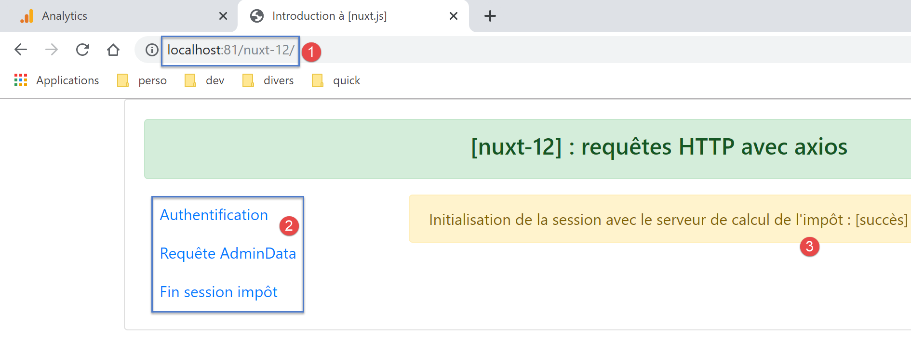
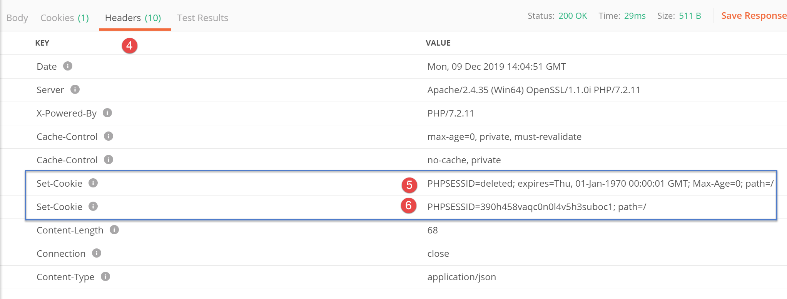
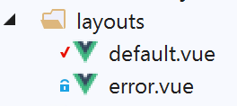
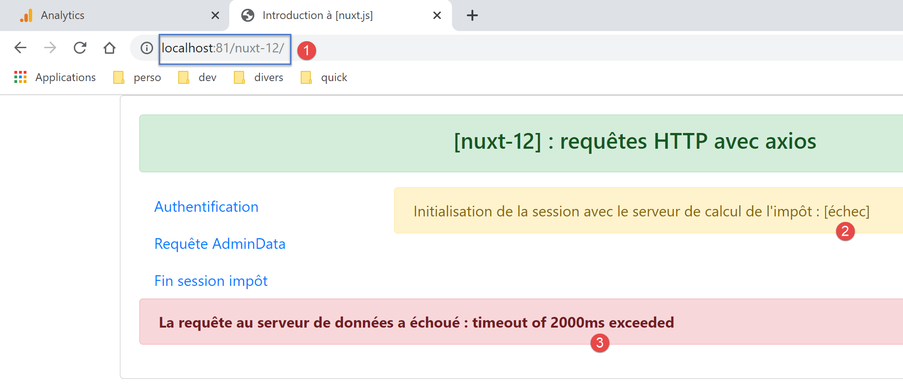

15. Exemple [nuxt-12] : requêtes HTTP avec axios
15.1. Présentation
Dans ce nouvel exemple, nous allons découvrir comment dans les fonctions [asyncData] on peut faire des requêtes HTTP avec la bibliothèque [axios]. Par ailleurs, nous allons utiliser des notions déjà acquises :
- l’utilisation de plugins de l’exemple [nuxt-06] :
- la persistance du store dans un cookie de session de l’exemple [nuxt-06] ;
- le contrôle de la navigation avec des middlewares de l’exemple [nuxt-09] ;
- la gestion des erreurs de l’exemple [nuxt-11] ;
L’architecture de l’exemple sera le suivant :

- l’application [nuxt] sera stockée sur le serveur [node.js] [3], téléchargée par le navigateur [1] qui l’exécutera ensuite ;
- le client [nuxt] [1] aussi bien que le serveur [nuxt] [3] feront des requêtes HTTP au serveur de données [2]. Ce serveur sera le serveur de calcul de l’impôt développé dans la partie PHP 7. Nous utiliserons sa dernière version, la version 14, avec les requêtes CORS autorisées ;
L’architecture de l’exemple peut être simplifiée de la façon suivante :

- en [1], le serveur [node.js] délivre les pages [nuxt] au navigateur [2]. C’est la couche [web] [8] du serveur qui délivre ces pages. Pour délivrer la page, le serveur a pu demander des données externes au serveur de données [3]. C’est la couche [DAO] [9] qui fait les requêtes HTTP nécessaires ;
- à chaque appel de page au serveur [node.js][1], le navigateur [2] reçoit la totalité de l’application [nuxt] qui va alors s’exécuter en mode SPA. Le bloc [UI] (User Interface) [4] présente des pages [vue.js] à l’utilisateur. Les actions de celui-ci ou le cycle de vie naturel des pages peuvent provoquer des appels de données externes au serveur de données [3]. C’est la couche [DAO] [5] qui fait alors les requêtes HTTP nécessaires ;
15.2. Arborescence du projet

15.3. Le fichier de configuration [nuxt.config.js]
Le projet sera contrôlé par le fichier [nuxt.config.js] suivant :
- ligne 22 : nous gérons nous-mêmes l’alerte d’attente de fin d’une action asynchrone ;
- ligne 31 : nous allons utiliser divers plugins qui seront spécialisés soit pour le client soit pour le serveur mais pas pour les deux à la fois ;
- ligne 52 : le module [axios] est intégré à [nuxt]. Cela va avoir pour conséquence que l’objet [axios] qui fera les requêtes HTTP de l’application [nuxt] vers le serveur PHP de calcul de l’impôt sera disponible dans [context.\$axios] ;
- ligne 54 : le module [cookie-universal-nuxt] va nous permettre de sauvegarder la session [nuxt] dans un cookie ;
- ligne 60 : la propriété [axios] nous permet de configurer le module [@nuxtjs/axios] de la ligne 52. Nous n’utiliserons pas cette possibilité à laquelle nous préfèrerons la propriété [env] de la ligne 88 ;
- ligne 90 : durée d’attente maximale de la réponse du serveur de calcul de l’impôt ;
- ligne 91 : nécessaire au client [nuxt] - autorise l’utilisation de cookies dans les échanges avec le serveur de calcul de l’impôt ;
- ligne 92 : l’URL de base du serveur de calcul de l’impôt ;
- ligne 94 : durée de vie de la session nuxt (5 mn) ;
- ligne 77 : la navigation des client et serveur [nuxt] sera contrôlée par un middleware de routage ;
15.4. La couche [UI] de l’application

Nous allons donner à l’application [nuxt] l’accès à l’API du serveur de calcul de l’impôt via la vue suivante :

- en [2], le menu qui donne accès à l’API du serveur de calcul de l’impôt :
- [Authentification] : correspond à la page [authentification]. Cette page fait une requête d’authentification auprès du serveur de calcul de l’impôt avec les identifiants [admin, admin] qui sont pour l’instant les seuls autorisés. Le résultat affiché est analogue à [3] ;
- [Requête AdminData] : correspond à la page [get-admindata]. Cette page demande au serveur de calcul de l’impôt, les données, appelées ici [adminData], qui permettent le calcul de l’impôt. Le résultat affiché est analogue à [3] ;
- [Fin session impôt] : correspond à la page [fin-session]. Cette page fait une requête de fin de session PHP auprès du serveur de calcul de l’impôt. Le serveur annule alors la session PHP courante et en initialise une nouvelle vierge ;
15.5. Les couches [dao] de l’application [nuxt]
Comme indiqué plus haut, l’architecture de l’application [nuxt] sera la suivante :
- en [1], le serveur [node.js] délivre les pages [nuxt] au navigateur [2]. C’est la couche [web] [8] du serveur qui délivre ces pages. Pour délivrer la page, le serveur a pu demander des données externes au serveur de données [3]. C’est la couche [DAO] [9] qui fait les requêtes HTTP nécessaires ;
- à chaque appel de page au serveur [node.js][1], le navigateur [2] reçoit la totalité de l’application [nuxt] qui va alors s’exécuter en mode SPA. Le bloc [UI] (User Interface) [4] présente des pages [vue.js] à l’utilisateur. Les actions de celui-ci ou le cycle de vie des pages peuvent provoquer des appels de données externes au serveur de données [3]. C’est la couche [DAO] [5] qui fait alors les requêtes HTTP nécessaires ;
Nous utiliserons la version 14 du serveur de calcul de l’impôt développé dans le document |Introduction au langage *PHP7* par l’exemple|. Nous utiliserons une partie seulement de son API (Application Programming Interface) jSON :
Requête | Réponse |
| |
| |
| |
| |
15.5.1. Le couche [dao] du serveur [nuxt]

Le serveur [node.js] [1] va utiliser la couche [dao] décrite dans le document |Introduction au framework *VUE.JS* par l’exemple|. Nous rappelons ici son code :
1 2 3 4 5 6 7 8 9 10 11 12 13 14 15 16 17 18 19 20 21 22 23 24 25 26 27 28 29 30 31 32 33 34 35 36 37 38 39 40 41 42 43 44 45 46 47 48 49 50 51 52 53 54 55 56 57 58 59 60 61 62 63 64 65 66 67 68 69 70 71 72 73 74 75 76 77 78 79 80 81 82 83 84 85 86 87 88 89 90 91 92 93 94 95 96 97 98 99 100 101 102 103 104 105 106 107 108 109 110 111 112 113 114 115 116 117 | |
- toutes les méthodes de la couche [dao] rendent l’objet envoyé par le serveur de données [{action : ‘xx’, état : nn, réponse : {...}] avec :
- [action] : le nom de l’action exécutée par le serveur de données ;
- [état] : indicateur numérique :
- [initSession] : état=700 pour une réponse sans erreur ;
- [authentifierUtilisateur] : état=200 pour une réponse sans erreur ;
- [getAdminData] : état=1000 pour une réponse sans erreur ;
- [fin-session] : état=400 pour une réponse sans erreur ;
- [réponse] : réponse associée à l’indicateur numérique [état]. Peut varier selon cet indicateur numérique ;
Examinons le constructeur de la classe [Dao] :
- ligne 2 : l’objet [axios] fourni en argument au constructeur est fourni par le code appelant. C’est lui qui va faire les requêtes HTTP ;
- ligne 5 : le nom du cookie de session envoyé par le serveur de données écrit en PHP ;
- ligne 6 : le cookie de session qui est échangé entre la couche [dao] et le serveur de données. Celui-ci est initialisé par la fonction [getRemoteData] des lignes 67-113 ;
Pour le cookie de session, il nous faut considérer deux couches [dao] séparées :
- celle du navigateur ;
- celle du serveur ;
Nous allons devoir gérer trois cookies de session :
- celui échangé entre le client [nuxt] et le serveur PHP 7 ;
- celui échangé entre le serveur [nuxt] et le serveur PHP 7 ;
- celui échangé entre le client [nuxt] et le serveur [nuxt] ;
Nous ferons en sorte que le cookie de la session avec le serveur PHP soit le même pour le client et le serveur [nuxt]. Nous appellerons ce cookie, cookie de la session PHP. Ce cookie est celui des cas 1 et 2. Nous appellerons cookie de la session [nuxt], le cookie du cas 3. Nous aurons donc deux sessions :
- une session PHP avec le cookie de session PHP ;
- une session [nuxt] avec le cookie de session [nuxt] ;
Pourquoi utiliser le même cookie pour les sessions PHP du client et du navigateur [nuxt] ? Nous voulons que l’application puisse dialoguer avec le serveur PHP 7 indifféremment avec le client ou le serveur [nuxt] :
- si une action A du serveur [nuxt] met le serveur PHP dans un état E, cet état est reflété dans la session PHP entretenue par le serveur PHP ;
- en utilisant le même cookie de session PHP que le serveur, une action B du client [nuxt] qui suivrait l’action A du serveur [nuxt] retrouverait le serveur PHP dans l’état E laissé par le serveur [nuxt] et pourrait donc s’appuyer sur le travail déjà fait par le serveur [nuxt] ;
- si après l’action B du client [nuxt], vient une action C du serveur [nuxt], pour la même raison que précédemment, cette action va pouvoir s’appuyer sur le travail fait par l’action B du client [nuxt] ;
Pour que le navigateur du client [nuxt] puisse dialoguer avec le serveur PHP du calcul de l’impôt, nous utiliserons la version 14 de ce serveur qui autorise les appels inter-domaines, ç-à-d ceux d’un navigateur vers le serveur PHP. Les appels du serveur [nuxt] vers le serveur PHP ne sont pas, eux, des appels inter-domaines. Cette notion n’existe que pour les appels faits depuis un navigateur.
Revenons au code du constructeur de la classe [Dao] précédente :
- les lignes 5 et 6 correspondent au cookie de la session PHP avec le serveur de calcul de l’impôt ;
La gestion du cookie de la session PHP ci-dessus ne convient pas au serveur [nuxt] : sa couche [dao] est instanciée à chaque nouvelle requête faite au serveur [nuxt]. On se rappelle en effet que demander une page au serveur [nuxt] revient à réinitialiser l’application [nuxt]. Ainsi lorsqu’à l’issue de la 1ère requête faite au serveur de données par le serveur [nuxt], le cookie de session PHP de la couche [dao] est initialisé, cette valeur est perdue lors de la requête HTTP suivante du même serveur [nuxt], car entre-temps sa couche [dao] a été recréée, le constructeur réexécuté et le cookie de session PHP réinitialisé avec la chaîne vide (ligne 6) ;
Une solution est d’utiliser un autre constructeur pour la couche [dao] du serveur :
- ligne 2 : cette fois-ci le cookie de la session PHP sera fourni au constructeur de la couche [dao] du serveur de données ;
Comment le serveur [nuxt] pourra-t-il fournir ce cookie de session PHP au constructeur de sa couche [dao] ? Nous stockerons le cookie de session PHP dans le cookie de session [nuxt] échangé entre le navigateur et le serveur [nuxt]. Le processus est le suivant :
- l’application [nuxt] est lancée ;
- lorsque le serveur [nuxt] fait sa 1ère requête HTTP avec le serveur PHP, il stocke le cookie de la session PHP qu’il a reçu dans le cookie de session [nuxt] qu’il échange avec le client [nuxt] ;
- le navigateur qui loge le client [nuxt] reçoit ce cookie de session [nuxt] et le renvoie donc systématiquement à chaque nouvelle requête au serveur [nuxt] ;
- lorsque le serveur [nuxt] devra faire une nouvelle requête au serveur PHP, il retrouvera le cookie de session PHP dans le cookie de session [nuxt] que le navigateur lui aura envoyé. Il l’enverra alors au serveur PHP ;
Il y a bien deux cookies de session et il ne faut pas les confondre :
- le cookie de session [nuxt] échangé entre le serveur [nuxt] et le navigateur du client [nuxt] ;
- le cookie de session PHP échangé entre le serveur [nuxt] et le serveur PHP ou entre le client [nuxt] et le serveur PHP ;
Revenons maintenant sur le code de la méthode de la classe [Dao]. Elle n’inclut pas de fonction pour clôre la session PHP avec le serveur de calcul de l’impôt. Nous ajoutons celle-ci :
Aux tests, on découvre que la fonction [getRemoteData] appelée ligne 12 ne convient pas pour la méthode [finSession] :
- lignes 30-43 : on recherche le cookie [PHPSESSID=xxx]. Si on le trouve, il est mémorisé dans la classe (ligne 36) ;
Ce code ne convient pas à la nouvelle méthode [finSession] car sur l’action [fin-session], le serveur PHP envoie deux cookies avec le nom [PHPSESSID]. Voici un exemple obtenu avec un client [Postman] :

- en [1], la demande du client [Postman] ;
- en [3], la réponse du serveur PHP ;
- en [4], les entêtes HTTP de la réponse du serveur PHP ;

- en [5], le serveur PHP indique d’abord qu’il a supprimé la session PHP courante ;
- en [6], le serveur PHP envoie le cookie de la nouvelle session PHP ;
Avec le code actuel, la fonction [getRemoteData] récupère le cookie [5] alors que c’est le cookie [6] qu’il faut mémoriser.
Il faut donc faire évoluer le code de la fonction [getRemoteData] :
- ligne 41 : on a trouvé un cookie avec le nom [PHPSESSID]. on le mémorise localement ;
- ligne 43 : on regarde si dans le cookie sauvegardé, il y a la chaîne [PHPSESSID=deleted] ;
- ligne 46 : si la réponse est non, alors c’est qu’on a trouvé le bon cookie [PHPSESSID]. On le mémorise dans la classe ;
Après la fonction [getRemoteData], le cookie de session PHP est mémorisé dans la classe, dans [this.phpSessionCookie]. On a dit que la classe était instanciée à chaque nouvelle requête HTTP du serveur [nuxt]. Le cookie de session PHP doit donc être exfiltré de la classe. Pour cela, on ajoute une nouvelle méthode à celle-ci :
- le serveur [nuxt] demande une action à sa couche [dao] en fournissant le cookie de la session PHP à son constructeur, s’il en a un ;
- une fois l’action faite, le serveur [nuxt] récupère le cookie de session PHP mémorisé par la couche [dao] à l’aide de la méthode [getPhpSessionCookie] précédente. Ce cookie peut être le même que le précédent ou un autre. Ce dernier cas arrive à deux occasions :
- lors de l’exécution de la méthode [initSession] (il n’y avait pas de cookie de session PHP avant) ;
- lors de l’exécution de la méthode [finSession] (le serveur PHP change le cookie de session PHP) ;
Notons une particularité sur le cookie de session PHP. Le serveur [nuxt] ne reçoit pas toujours ce cookie de la part du serveur PHP. En effet, celui-ci ne l’envoie qu’une fois. Ensuite il ne l’envoie plus. Lorsqu’on regarde le code de [getRemoteData] et celui de [getPhpSessionCookie] on verra alors que lorsque le serveur PHP n’envoie pas de cookie de session, la fonction [getPhpSessionCookie] renvoie alors le cookie de session PHP fourni au constucteur. C’est ainsi que le serveur envoie toujours au serveur PHP le dernier cookie de session PHP que celui-ci lui a envoyé.
15.5.2. La couche [dao] du client [nuxt]

Pour le client [nuxt] qui s’exécute dans un navigateur, on reprend le code de la classe [Dao] du document |Introduction au framework *VUE.JS* par l’exemple| :
Ce code se distingue de la couche [dao] du serveur [nuxt] par le fait qu’il ne gère pas le cookie de la session PHP avec le serveur de calcul de l’impôt : c’est le navigateur qui le fait.
Nous allons, comme nous l’avons fait pour la couche [dao] du serveur [nuxt], ajouter une méthode [finSession] :
Lorsque le client [nuxt] exécute cette méthode, il reçoit, comme le serveur [nuxt], deux cookies de session PHP. C’est en fait le navigateur qui les reçoit et il gère correctement la situation : il ne garde que le cookie de la nouvelle session PHP qu’a initiée le serveur de calcul de l’impôt. Donc à la prochaine action du client [nuxt] vers le serveur PHP, le cookie de session PHP sera correct car c’est le navigateur qui envoie celui-ci. Il y a cependant un problème : le serveur [nuxt] n’a pas connaissance du fait que le cookie de session PHP a changé. Dans ses échanges avec le serveur PHP, il va alors envoyer un cookie de session PHP qui n’existe plus et on va avoir des problèmes. Il faudrait que le client [nuxt] avertisse le serveur [nuxt] que le cookie de session PHP a changé et lui transmette celui-ci. On sait comment il peut faire cela : via le cookie de session [nuxt], le cookie échangé entre le client et le serveur [nuxt]. Le client [nuxt] a au moins deux façons de récupérer le nouveau cookie de session PHP :
- en le demandant au navigateur ;
- en utilisant la méthode [getRemoteData] du serveur qui sait comment récupérer le nouveau cookie de session PHP ;
Nous allons utiliser la 2ième solution car elle est déjà toute prête. La méthode [getRemoteData] du client [nuxt] devient alors la suivante :
On a gardé dans [getRemoteData] uniquement le code qui exploite la réponse du serveur PHP à la recherche du cookie de session PHP. On n’a pas gardé le code qui incluait le cookie de session PHP dans la requête au serveur PHP car c’est le navigateur qui abrite le client [nuxt] qui s’en charge.
Une fois le cookie de session PHP obtenu par le client [nuxt], celui-ci doit être mis dans la session [nuxt] pour que le serveur [nuxt] puisse en bébéficier. Ce n’est pas la couche [dao] qui s’occupe de cela mais elle donne accès par une méthode au cookie de session PHP qu’elle a mémorisé :
La fonction [getPhpSessionCookie] ne rend pas toujours un cookie de session valide :
- il faut se souvenir ici que la couche [dao] du client [nuxt] est persistante. Elle est instanciée une fois et reste ensuite en mémoire ;
- tant que le serveur PHP n’envoie pas un cookie de session PHP au client [nuxt], la fonction [getPhpSessionCookie] du client [nuxt] renvoie une valeur [undefined] ;
- lorsque le serveur PHP envoie un cookie de session PHP au client [nuxt], celui-ci est mémorisé dans [this.phpSessionCookie] et le restera tant qu’il ne sera pas changé par un nouveau cookie de session PHP envoyé par le serveur PHP. La fonction [getPhpSessionCookie] du client [nuxt] renvoie alors le dernier cookie de session PHP reçu ;
La couche [dao] du client [nuxt] ne diffère de celle du serveur [nuxt] que par un point : elle n’envoie pas le cookie de session PHP elle-même car c’est le navigateur qui le fait. Néanmoins on a préféré garder deux couches [dao] distinctes car les raisonnements qui mènent à leurs écritures respectives sont différents.
15.6. La session [nuxt]

La session [nuxt] (entre client et serveur nuxt) sera encapsulée dans l’objet [session] suivant :
- lignes 5-10 : la session n’a qu’une propriété [value] avec deux sous-propriétés :
- [initStoreDone] qui indique si le store a été initialisé ou pas ;
- [store] : la valeur [store.state] du store Vuex de l’application ;
- lignes 12-18 : la méthode [save] sert à sauvegarder la session [nuxt] dans un cookie. On utilise ici la bibliothèque [cookie-universal-nuxt] pour gérer le cookie. On notera le nom du cookie de la session [nuxt] : [nuxt-session] (ligne 17) ;
- lignes 20-26 : la méthode [reset] réinitialise la session [nuxt] ;
- ligne 23 : le store Vuex est réinitialisé puis sauvegardé en session, ligne 25 ;
15.7. Les plugins de gestion de la session [nuxt]

15.7.1. Le plugin de gestion de la session [nuxt] du serveur [nuxt]
Au démarrage de l’application, c’est le serveur [nuxt] qui opère le premier. C’est donc lui qui va initialiser la session [nuxt]. Le script [server/plgSession] est le suivant :
- ligne 4 : on importe le code de la session [nuxt] ;
- ligne 11 : on récupère la valeur du cookie de la session [nuxt] ;
- lignes 12-15 : si le cookie de la session [nuxt] n’existait pas, alors la session [nuxt] importée ligne 4 est suffisante. Il n’y a rien de plus à faire ;
- lignes 15-19 : si le cookie de la session [nuxt] existait, alors ligne 18 on stocke sa valeur dans la session importée ligne 4 ;
- ligne 22 : la session a été soit initialisée soit restaurée. On la rend disponible via la fonction [\$session] ;
15.7.2. Le plugin de gestion de la session [nuxt] du client [nuxt]
Le script [client/plgSession] est le suivant :
- ligne 4 : la session [nuxt] est importée ;
- ligne 10 : on récupère la session [nuxt] courante dans le cookie [nuxt-session] ;
- ligne 13 : on rend la session [nuxt] importée ligne 4 au travers de la fonction injectée [\$session] ;
15.8. Les plugins des couches [dao]

15.8.1. Le plugin de la couche [dao] du client [nuxt]
Le script [client/plgDao] est le suivant :
- ligne 3 : la couche [dao] du client [nuxt] est importée ;
-
lignes 6-8 : on configure l’objet [context.\$axios] qui va faire les requêtes HTTP de la couche [dao] du client [nuxt] avec les informations du fichier [nuxt.config] :
-
ligne 10 : la couche [dao] du client [nuxt] est instanciée ;
- ligne 12 : la fonction [\$dao] est injectée dans le contexte et les pages du client. Cette fonction donne accès à la couche [dao] de la ligne 10 ;
On retiendra donc que pour avoir accès à la couche [dao] du client [nuxt] lorsque celui-ci est exécuté, on écrira :
- [context.app.\$dao()] là où le contexte est connu ;
- [this.\$dao()] dans une page [Vue.js] ;
15.8.2. Le plugin de la couche [dao] du serveur [nuxt]
Le script [server/plgDao] est le suivant :
- ligne 3 : la couche [dao] du serveur [nuxt] est importée ;
-
lignes 6-7 : on configure l’objet [context.\$axios] qui va faire les requêtes HTTP de la couche [dao] du serveur [nuxt] avec les informations du fichier [nuxt.config] :
-
ligne 9 : on récupère le store de l’application [nuxt] ;
- ligne 10 : si le store existe, on récupère le cookie de la session PHP car on en a besoin pour instancier la couche [dao] du serveur [nuxt] ;
- ligne 13 : on instancie la couche [dao] du serveur [nuxt] ;
- ligne 15 : la fonction [\$dao] est injectée dans le contexte et les pages du serveur [nuxt]. Cette fonction donne accès à la couche [dao] de la ligne 13 ;
On retiendra donc que pour avoir accès à la couche [dao] du serveur [nuxt] lorsque celui-ci est exécuté, on écrira :
- [context.app.\$dao()] là où le contexte est connu ;
- [this.\$dao()] dans une page [Vue.js] ;
15.9. Le store Vuex

Le store [Vuex] va mémoriser toutes les données qui doivent être partagées par les différentes composantes de l’application [pages, client, serveur] sans que pour autant ces données soient réactives.
Les données mémorisées dans le store sont les suivantes :
- ligne 6 : [jsonSessionStarted] sera positionnée à vrai dès que l’initialisation d’une session jSON avec le serveur PHP aura été réussie, qu’elle ait été faite par le client ou le serveur [nuxt]. A l’issue de cette initialisation, le cookie de session avec le serveur PHP aura été récupéré et placé dans la propriété [phpSessionCookie], ligne 10 ;
- ligne 8 : [userAuthenticated] sera positionnée à vrai dès que l’authentification auprès du serveur PHP aura été réussie, qu’elle ait été faite par le client ou le serveur [nuxt] ;
- ligne 12 : [adminData] sera la valeur [adminData] obtenue auprès du serveur PHP une fois l’authentification réussie ;
- lignes 18-22 : la mutation [replace] permet d’initialiser les propriétés précédentes avec celles d’un objet passé en paramètre ;
- lignes 24-26 : la mutation [reset] redonne leurs valeurs initiales aux propriétés du store ;
- lignes 31-37 : la fonction [nuxtServerInit] délègue son travail à la fonction [initStore] ;
- lignes 39-60 : la fonction [initStore] a deux rôles :
- si le store n’a pas été initialisé, il est initialisé et mis en session ;
- si le store a déjà été initialisé, sa valeur est récupérée dans la session [nuxt] ;
- ligne 42 : on récupère la session nuxt ;
- ligne 44 : on regarde si le store a été initialisé :
- si ce n’est pas le cas, on met le store initial dans la session (ligne 48) ;
- puis ligne 50, on indique que le store a été initialisé ;
- lignes 51-55 : si le store était initialisé, on utilise alors celui-ci, ligne 54, pour initialiser le store à la valeur contenue dans la session ;
- ligne 57 : dans tous les cas, la session est sauvegardée dans le cookie [nuxt-session], avec le store qu’elle contient ;
15.10. Le plugin [plgEventBus]

Ce plugin vise à rendre un bus d’événements accessible au client [nuxt] via une fonction [\$eventBus] injectée dans le contexte du client [nuxt]. Il est inutile de l’injecter dans le contexte du serveur [nuxt] car celui-ci ne sait pas gérer les événements. Néanmoins nous avons déjà vu que l’injecter côté serveur puis l’utiliser ne provoque pas d’erreur.
Nous avons déjà rencontré ce plugin au paragraphe lien. La fonction [\$eventBus] sera disponible au client via les notations :
- [context.app.\$eventBus()] là où le contexte est disponible ;
- [this.\$eventBus()] dans les pages [Vue.js] du client ;
15.11. Les composants de l’application [nuxt]

Le composant [layout] est celui des exemples précédents :
Le composant [navigation] est le suivant :
15.12. Les layouts de l’application [nuxt]

15.12.1. [default]
Le layout [default] est celui utilisé pour l’exemple [nuxt-11] au paragraphe lien :
- lignes 10-14 : affichent le message d’attente de la fin d’une opération asynchrone du client [nuxt] ;
- lignes 15-18 : affichent l’éventuel message d’erreur d’une opération asynchrone ;
- ligne 37 : la fonction [created] de la page [default] est exécutée avant la fonction [mounted] des pages ;
- ligne 39 : si l’exécuteur est le client [nuxt], alors la page [default] se met à l’écoute des événements :
- [loading] qui signale le début ou la fin d’une attente. La fonction [mShowLoading] est alors exécutée ;
- [errorLoading] qui signale qu’il faut afficher un message d’erreur. La fonction [mShowErrorLoading] est alors exécutée ;
- les pages [nuxt] :
- font afficher le message d’attente en émettant l’événement [‘loading’, true] sur le bus d’événements ;
- cachent le message d’attente en émettant l’événement [‘loading’, false] sur le bus d’événements ;
- font afficher un message d’erreur en émettant l’événement [‘errorLoading’, true] sur le bus d’événements ;
- cachent le message d’erreur en émettant l’événement [‘errorLoading’, false] sur le bus d’événements ;
15.12.2. [error]
Le layout [error] affiche un message d’erreur système (non géré par le développeur) :
15.13. La page [index] exécutée par le serveur [nuxt]

La page [index.vue] a la particularité d’être accessible uniquement via le serveur [nuxt]. Aucun lien n’est présenté à l’utilisateur pour y avoir accès via le client [nuxt]. Son code est le suivant :
- ligne 7 : la page affiche le résultat [result] d’une requête asynchrone (lignes 46 et 51) ;
- ligne 31 : l’opération asynchrone est l’ouverture d’une session jSON avec le serveur de calcul de l’impôt ;
- ligne 25 : on sait que lorsque la page est demandée directement au serveur [nuxt], la fonction [asyncData] n’est exécutée que par le serveur et pas par le client [nuxt] qui s’exécute lorsque le navigateur a reçu la réponse du serveur [nuxt] ;
- ligne 30 : on récupère la couche [dao] dans le contexte du serveur [nuxt] ;
- ligne 35 : si le serveur n’avait pas encore fait de requête au serveur de calcul de l’impôt, il reçoit son premier cookie de session PHP, sinon le dernier cookie de session PHP qu’il a reçu (revoir le code de la couche [dao] du serveur [nuxt] au paragraphe lien) ;
- ligne 37 : on mémorise ce cookie de session PHP dans le store ;
- lignes 39-42 : on regarde si l’opération a réussi. Si ce n’est pas le cas, une exception est lancée qui sera interceptée par le [catch] de la ligne 47 ;
- ligne 44 : on note dans le store que la session jSON avec le serveur PHP est démarrée ;
- ligne 46 : on rend le résultat [result] qui est affiché ligne 7 ;
- lignes 47-54 : on traite une éventuelle exception. Celle-ci peut-être de deux natures :
- l’opération HTTP de la ligne 31 a échoué sur une erreur de communication serveur [nuxt] / serveur PHP ;
- l’opération HTTP de la ligne 31 a réussi mais le résultat reçu a signalé une erreur (lignes 39-42) ;
- ligne 51 : on note que la session jSON avec le serveur PHP n’a pas démarré ;
- ligne 53 : on rend le résultat [result] qui est affiché ligne 7. Par ailleurs, on positionne les propriétés [showErrorLoading] et [errorLoadingMessage] que le client [nuxt] va utiliser pour afficher un message d’erreur lorsqu’il recevra la page envoyée par le serveur [nuxt] (lignes 72-79) ;
- lignes 54-60 : code exécuté dans tous les cas (réussite ou échec) ;
- ligne 56 : on récupère la session [nuxt] dans le contexte du serveur [nuxt] ;
- ligne 57 : on la sauvegarde ;
- lignes 63-68 : une fois la fonction [asyncData] terminée, le serveur [nuxt] exécute les fonctions [beforeCreate] et [create] ;
Note : l’exécution de la page [index] par le serveur [nuxt] peut échouer par exemple si le serveur de calcul de l’impôt n’est pas lancé lorsque l’application [nuxt] est elle lancée :

Dans ce cas, la seule solution est de lancer le serveur de calcul de l’impôt puis l’application [nuxt] elle-même puisque le menu de navigation ne propose pas d’option pour initier une session jSON avec le serveur de calcul de l’impôt ;
15.14. La page [index] exécutée par le client [nuxt]
La page [index] n’est exécutée par le client [nuxt] qu’après que le serveur [nuxt] la lui ait envoyée. Celui-ci lui a envoyé les informations [result] et éventuellement [showErrorLoading] et [errorLoadingMessage].
On sait que la fonction [asyncData] ne sera pas exécutée. Restent alors les fonctions du cycle de vie et notamment la fonction [mounted] :
- le client [nuxt] intègre automatiquement dans les propriétés de la page les éléments [result] et éventuellement [showErrorLoading, errorLoadingMessage] que lui a envoyés le serveur [nuxt] :
- la propriété [result] est affichée par la ligne 7 ;
- les propriétés [showErrorLoading, errorLoadingMessage] sont utilisées par la méthode [mounted] : ligne 4, on teste la propriété [showErrorLoading]. Si elle est vraie, on utilise, ligne 6, le bus d’événements du client [nuxt] pour signaler qu’il y a un message d’erreur à afficher ;
- l’événement [errorLoading] lancé ligne 6, est intercepté par la page [layouts/default] décrite au paragraphe lien ;
15.15. La page [authentification] exécutée par le serveur [nuxt]
La page [authentification] est chargée d’identifier un utilisateur auprès du serveur de calcul de l’impôt. Son code est le suivant :
- ligne 7 : la page affiche le résultat [result] de la requête asynchrone [asyncData] des lignes 25-65 ;
- lignes 28-33 : le serveur n’exécute pas ces lignes destinées au client [nuxt] ;
- ligne 36 : on récupère la couche [dao] du serveur [nuxt] ;
- ligne 37 : on s’authentifie auprès du serveur de calcul de l’impôt avec les identifiants de test [admin, admin] qui sont les seuls acceptés par le serveur de calcul de l’impôt ;
- ligne 41 : l’opération d’authentification a réussi si seulement la réponse à l’état 200 ;
- ligne 43 : on met dans le store la propriété [userAuthenticated] ;
- lignes 44-46 : le store est sauvegardé dans la session [nuxt] ;
- lignes 48-51 : si l’authentification a échoué, on lance une exception avec le message d’erreur que le serveur de calcul de l’impôt a envoyé ;
- sinon ligne 53, on retoune un résultat de réussite qui sera affiché ligne 7 ;
- lignes 54-57 : en cas d’erreur on positionne trois propriétés de la page [result, showErrorLoading, errorLoadingMessage]. La propriété [result] sera affichée ligne 7. Les trois propriétés seront envoyées au client [nuxt] ;
- lignes 60-63 : ne sont pas exécutées par le serveur [nuxt] ;
- une fois que [asyncData] a rendu son résultat, celui-ci est affiché ligne 7. Puis les méthodes [beforeCreate] (lignes 67-69) et [created] (lignes 70-72) sont exécutées ;
- c’est fini ;
Note : l’exécution de la page [authentification] par le serveur [nuxt] peut échouer par exemple si la session jSON avec le serveur de calcul de l’impôt n’a pas été initialisée. Cela est possible de la façon suivante :
- supprimez le cookie de session PHP de votre navigateur (pour repartir de zéro) :

- lancez l’application [nuxt] alors que le serveur de calcul n’a pas été lancé : vous obtenez une erreur ;
- lancez le serveur de calcul de l’impôt ;
- demandez l’URL [/authentification] directement dans la barre d’adresses du navigateur :

Dans ce cas, la seule solution est de nouveau de recharger la page [index].
15.16. La page [authentification] exécutée par le client [nuxt]
Reprenons le code de la page :
Il y a deux cas d’exécution de la page [authentification] par le client [nuxt] :
- le client [nuxt] s’exécute après que le serveur [nuxt] ait envoyé au navigateur du client [nuxt] la page [authentification] ;
- le client [nuxt] parce que l’utilisateur a cliqué sur le lien [Authentification] du menu de navigation :

Etudions d’abord le 1er cas. Dans ce cas, le client [nuxt] n’exécute pas la fonction [asyncData]. Il intègre dans les propriétés de la page les éléments [result] et éventuellement [showErrorLoading, errorLoadingMessage] que lui a envoyés le serveur [nuxt] :
- la propriété [result] est affichée par la ligne 7 ;
- les propriétés [showErrorLoading, errorLoadingMessage] sont utilisées par la méthode [mounted] : ligne 79, on teste la propriété [showErrorLoading]. Si elle est vraie, on utilise, ligne 81, le bus d’événements du client [nuxt] pour signaler qu’il y a un message d’erreur à afficher ;
Le mécanisme de l’affichage du message d’erreur a été expliqué pour la page [index] au paragraphe lien.
Le cas 2 est celui du client [nuxt] exécuté lorsque l’utilisateur clique sur le lien [Authentification]. Dans ce cas, le client [nuxt] s’exécute de façon autonome et pas après le serveur [nuxt]. La fonction [asyncData] est alors exécutée. Nous ne donnons que les détails qui diffèrent des explications données pour la page exécutée par le serveur [nuxt] :
- lignes 28-33 : le client [nuxt] demande l’affichage du message d’attente et la disparition d’un éventuel message d’erreur qui aurait été précédemment affiché ;
- ligne 36 : c’est désormais la couche [dao] du client [nuxt] qui est obtenue ici ;
- lignes 60-63 : le client [nuxt] demande la fin de l’affichage du message d’attente ;
- une fois [asyncData] terminée, le cycle de vie de la page va avoir lieu. la fonction [mounted] des lignes 76-83 va être exécutée. S’il y a eu erreur, le message d’erreur va alors être affiché ;
Note : pour provoquer une erreur, suivez la procédure expliquée pour le serveur [nuxt] à la fin du paragraphe lien, mais au lieu de demander la page [authentification] en tapant son URL dans la barre d’adresses, utilisez le lien [Authentification] du menu de navigation. C’est alors le client [nuxt] qui s’exécute.
15.17. La page [get-admindata]
Le code de la page [get-admindata] est le suivant :
Cette page est très semblable à la page [authentification]. Les explications sont analogues aussi bien pour son exécution par le serveur [nuxt] que pour son exécution par le client [nuxt]. Notons cependant que la ligne 7 affiche non pas succès / échec comme précédemment mais la valeur de la donnée reçue du serveur de calcul de l’impôt (ligne 52) :

Le résultat ci-dessus est obtenu aussi bien avec le serveur qu’avec le client [nuxt]. Pour provoquer une erreur, demandez la page [get-admindata], via le serveur ou le client [nuxt], sans être authentifié :

15.18. La page [fin-session]
Le code de la page est le suivant :
Le code est très analogue à celui des pages précédentes et les explications sont les mêmes. Il faut simplement s’attarder sur un point : l’opération asynchrone de la ligne 38, fait que le serveur de calcul de l’impôt va envoyer un nouveau cookie de session PHP. Les explications pour la gestion de ce cookie diffèrent selon que c’est le serveur ou le client [nuxt] qui exécute ce code.
Commençons par le serveur [nuxt] :
- ligne 37 : c’est la couche [dao] du serveur [nuxt] qui est instanciée. Rappelons le code de son constructeur :
On voit ligne 1, que le constructeur a besoin du cookie de session PHP du moment, le dernier reçu, que ce soit par le serveur ou le client [nuxt] ;
- ligne 52 : le serveur [nuxt] récupère le cookie de la nouvelle session PHP ou bien l’ancien cookie si l’opération de fin de session a échoué ;
- ligne 54 : le cookie de session PHP est mis dans le store puis sauvegardé dans la session [nuxt] aux lignes 56-57 ;
- après le serveur c’est le client [nuxt] qui exécute la page [fin-session] avec les données envoyées par le serveur. On sait qu’il ne va pas exécuter la fonction [asyncData] ;
- au final, après que serveur et client [nuxt] ont terminé leur travail, on sait que le cookie PHP nécessaire aux échanges avec le serveur de calcul de l’impôt est dans la session [nuxt] ;
Le fait que le cookie PHP soit dans la session [nuxt] est suffisant pour le serveur, car c’est là que va le prendre sa couche [dao]. Dans le plugin [server/plgDao] qui initialise la couche [dao] du serveur, on a écrit :
- ligne 13, la couche [dao] du serveur [nuxt] est instanciée avec le cookie de session PHP pris dans la session [nuxt], lignes 9-10 ;
Pour le client [nuxt], c’est une autre histoire. Ce n’est pas lui en effet qui envoie le cookie mais le navigateur qui l’exécute. Or ce navigateur ne connaît pas le cookie de la nouvelle session PHP reçu par le serveur [nuxt]. Si on utilise les liens du menu de navigation [3] :

Le serveur de calcul de l’impôt va recevoir du navigateur un cookie de session PHP obsolète et il va répondre qu’à ce cookie aucune session jSON n’est associée. Il nous faut trouver le moyen de passer au navigateur le nouveau cookie de session PHP.
On peut utiliser un middleware de routing pour ce faire :

Le script [client/routing] est le middleware de routage déclaré dans le fichier [nuxt.config] :
Le script [middleware/routing] est le suivant :
- lignes 9-12 : on ne route que le client avec une fonction importée ligne 4 ;
Le script [middleware/client/routing] est le suivant :
Revenons à la situation juste après l’exécution de la page [fin-session] par le serveur [nuxt] :
Si on clique sur l’un des liens du menu [3], le client [nuxt] va prendre la main. Comme il va y avoir changement de page, le script de routing du client va s’exécuter :
- ligne 13 : le cookie de session PHP est trouvé dans le store de l’application [nuxt] ;
- ligne 14 : s’il n’est pas vide on le transmet au navigateur (ligne 16). A partir de ce moment le navigateur du client [nuxt] a le bon cookie de session PHP ;
Le script [client/routing] est exécuté à chaque changement de page du client [nuxt]. Le code du script est valide quelque soit la page cible : simplement, la plupart du temps, il donne au navigateur un cookie de session PHP qu’il a déjà, sauf dans deux cas :
- juste après le démarrage de l’application, le serveur [nuxt] exécute la page [index] et reçoit un 1er cookie de session PHP que le navigateur du client [nuxt] n’a pas ;
- lorsque le serveur [nuxt] exécute la page [fin-session] comme il vient d’être expliqué ;
Maintenant étudions le cas où la page [fin-session] est exécutée par le client [nuxt] uniquement, parce qu’on a cliqué sur son lien dans le menu de navigation. C’est désormais le client [nuxt] qui exécute la fonction [asyncData] :
- ligne 3 : c’est la couche [dao] du client [nuxt] qui est obtenu ici ;
- ligne 18 : le cookie de session PHP récupéré par la couche [dao] du client [nuxt] est mémorisé, mis dans le store (ligne 20) puis sauvegardé en session [nuxt] (lignes 22-23) ;
- à partir de là tout va bien car on sait que la couche [dao] du serveur [nuxt] va chercher le cookie de session PHP dans la session [nuxt] ;
15.19. Exécution
Pour exécuter cet exemple, il faut prendre soin avant l’exécution de supprimer le cookie de session [nuxt] et le cookie PHP du navigateur exécutant le client [nuxt] afin de partir d’une situation nette. Ci-dessous un exemple avec le navigateur Chrome :

15.20. Conclusion
Cet exemple a été particulièrement complexe. Il réunissait des connaissances acquises dans les exemples précédents : persistance du store dans une session [nuxt], plugins d’injections de fonctions, middleware de routage, gestion des erreurs des opérations asynchrones. La complexité a été accrue par le fait qu’on voulait que l’utilisateur puisse aussi bien utiliser les liens du menu de navigation que taper des URL à la main sans que ça casse l’application. Pour cela, on a été obligés de regarder comment se comportait chaque page selon qu’elle était exécutée par le client ou le serveur [nuxt].
Cette unité de comportement du client et du serveur [nuxt] n’est pas indispensable. On peut se mettre dans le cas fréquent où :
- la première page est délivrée par le serveur [nuxt] ;
- toutes les pages suivantes sont délivrées par le client [nuxt] qui travaille alors en mode [SPA] ;
Néanmoins même dans ce cas, il faut vérifier ce que donne l’exécution de toutes les pages par le serveur [nuxt] car c’est ce qu’obtiendront les moteurs de recherche qui les demanderont.